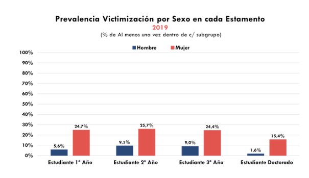
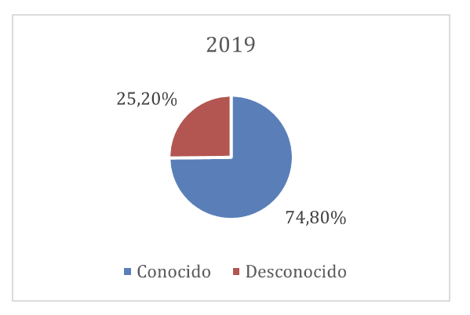
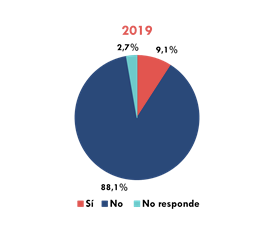

Clase 11: Violencia de género
SOL191 · Instituto de Sociología · PUC
SOL191 · Clase 11: Violencia de género
Hoy hablaremos de violencia física, sexual, psicológica y digital, acoso, femicidio y abuso sexual. Puede ser difícil o doloroso, sobre todo si es parte de tu experiencia.
1 de cada 4 mujeres fue víctima de violencia intrafamiliar en 2022.
El 2023, 43 femicidios consumados y 259 frustrados (Sernameg).
Promedio de edad de primer abuso sexual (niños y niñas) es de 10,5 años (2021).
9 de cada 10 mujeres han sido víctimas de acoso sexual callejero al menos una vez en su vida.



(Manne 2018)
Más allá del odio u hostilidad individual hacia las mujeres, la misoginia es un sistema de control social. Funciona para fiscalizar y asegurar la subordinación de la mujer y mantener normas patriarcales.
Sexismo es la ideología que racionaliza y justifica el patriarcado, mientras que la misoginia es “la policía” que castiga a quienes desafían este orden.
El castigo misógino: castigo a las mujeres que desafían las normas de género o fracasan en servir los intereses de los hombres.
¿Ejemplos de comportamientos o situaciones dónde las mujeres desafían las normas y pueden ser fiscalizadas? ¿Y de hombres?
(Manne 2018)
La sociedad ofrece “himpathy” o simpatía excesiva a quienes perpetúan violencia hacia las mujeres, minimizando sus acciones y/o culpando a las víctimas, lo que perpetúa el sistema patriarcal.
Injusticia epistémica: cuando los conocimientos, experiencias y voces de las mujeres son devaluados o ignorados, reforzando su estatus subordinado.
(Segato 2016)
La violencia sexual no responde a un deseo sexual: es una violencia expresiva, un acto de poder que se exhibe y se dirige también a otros hombres.
¿Qué cambia si entendemos la violencia como mensaje a otros hombres y no solo como agresión a una víctima?
Hitos legales
Novedades de la Ley 21.675
(Valdebenito Zárate & Villena Llanos 2025)
A partir de debates parlamentarios, informes de organizaciones feministas y entrevistas, identifican cuatro marcos para entender la violencia de género:
Encuentran tensiones entre la mirada institucional y las demandas históricas del movimiento feminista, y concluyen que la ley avanza pero reproduce algunas representaciones tradicionales y omite voces críticas.
(Manne, “What Makes Men in Groups Behave So Badly?”, NYT 2026)
Caso: el chat grupal de la fraternidad Chi Phi (Cornell) y la denuncia de una estudiante por agresión sexual por parte de varios hombres.
En grupos de 4 personas (20 min).
1. Mecanismos (7 min). Según Manne, ¿cómo opera la dinámica grupal? Identifiquen en el texto: la lealtad entre pares (“bro code”), el silencio de quienes observan, y la himpathy (¿hacia quién se dirige la simpatía?).
2. Conexión teórica (7 min). ¿Qué parte del caso ilustra mejor la violencia expresiva y la cofradía masculina de Segato? ¿Qué agrega Manne que Segato no dice, o al revés?
3. Aplicación y acción (6 min). Elijan una:
73,8% de 531 mujeres encuestadas había sufrido violencia digital (muestra no probabilística, ONG Amaranta, inicio de la pandemia).
¿Por qué no podemos generalizar el 73,8%? ¿Es menos “real” la violencia digital?
Violencia contra mujeres y niñas en el ámbito privado
Feminicidio
Violencia sexual
Trata de personas
Mutilación genital femenina
Matrimonio infantil
Violencia en línea o digital
SOL191 Sociología del Género · Clase 11